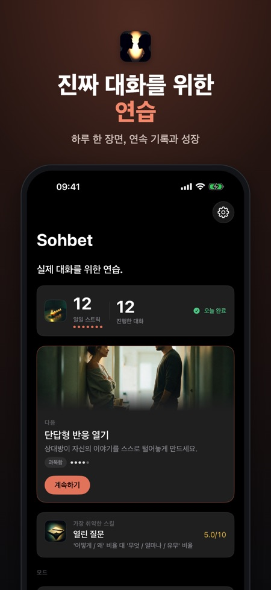
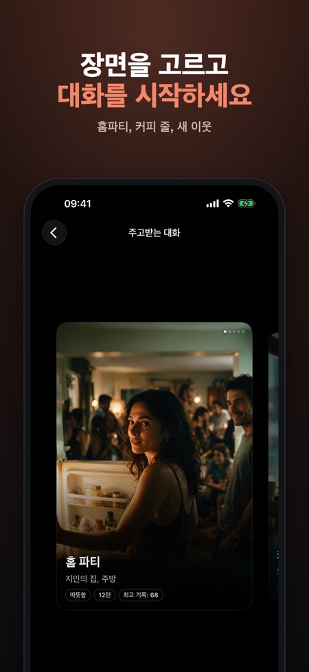
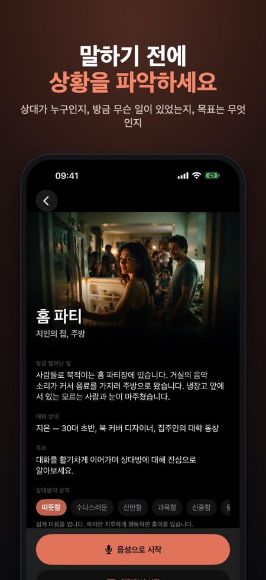

AI 채팅으로 키우는 대인관계 자신감과 소통 능력. 실시간 대화, 음성 모드, 상세 평가를 포함한 대화 2회를 구독 없이 이용할 수 있습니다. 계정이나 이메일 등록이 필요 없습니다. 이제 41개 언어로 지원되며, Pro는 1주일 체험으로 시작됩니다.



Sohbet은 사용자의 말에 솔직하게 반응하는 상대와 대화 기술을 연습할 수 있는 게임입니다.
상대방은 AI가 연기하며, 친절하게 대하려고 노력하지 않습니다. 단답형 질문을 던지면 지루해하고, 자기 이야기만 너무 많이 하면 흥미를 잃습니다. 적절한 순간에 올바른 질문을 하면 마음을 엽니다. 화면 상단의 흥미도 바가 이를 실시간으로 보여주며, 흥미도가 0에 도달하면 대화가 종료됩니다.
대화가 끝났을 때
평가는 칭찬으로 시작하지 않습니다. 사용자가 한 행동, 해당 대화가 효과적이었거나 그렇지 않은 이유, 그리고 대신 할 수 있었던 말을 대화 차례별로 분석합니다. "더 마음을 열어보세요"와 같은 일반적인 조언은 제공되지 않습니다. 모든 피드백은 대화 차례 번호 및 사용자가 실제로 작성한 문장과 연결되어 있습니다. 제안된 문장은 실제 상황에서 유용하게 쓸 수 있는 문장입니다.
점수 산정은 엄격합니다. 평균적인 대화는 50~60점을 받으며, 80점 이상은 진정으로 뛰어난 대화를 의미합니다. 모든 것을 칭찬하기만 하는 평가관은 아무것도 가르쳐 주지 못합니다.
타이핑 대신 음성으로 대화
텍스트 입력 대신 말로 대화할 수 있습니다. 캐릭터의 음성은 시나리오에 따라 남성 또는 여성으로 설정됩니다. 실제 대화와 마찬가지로 대화 속도와 침묵의 빈도 역시 평가에 반영됩니다.
16가지 시나리오
카페 옆 테이블, 파티장, 회식 자리, 모르는 사람 옆에 앉기, 정중하게 대화 끊기, 초대를 거절하기 등의 상황이 준비되어 있습니다. 쉬운 난이도부터 어려운 난이도까지 단계별로 열립니다. 동일한 시나리오를 다른 성격의 상대와 다시 진행할 수 있으며, 같은 상황이라도 훨씬 까다로운 상대를 만나게 됩니다.
부족한 점을 바탕으로 생성되는 시나리오
몇 번의 대화를 거치면 어떤 기술이 부족한지 명확해집니다. 단 한 번의 탭으로 해당 기술을 정확히 겨냥한 새로운 시나리오가 생성됩니다.
대화 기록
모든 대화는 대화록 및 평가 내용과 함께 저장됩니다. 동일한 지점에서 계속 막히는지, 혹은 실력이 향상되고 있는지 등 반복되는 습관을 확인할 수 있습니다.
개인정보 보호
계정 생성이나 이메일 입력이 필요 없습니다. 대화록과 평가는 사용자의 기기에 저장됩니다. 대화 중 텍스트는 당사 서버를 거쳐 캐릭터의 답변과 평가를 작성하는 AI 모델로 전달되며, 음성은 텍스트로 변환하기 위해 음성 인식 서비스로 전송됩니다. 당사 서버는 텍스트를 보관하지 않으며 예외는 두 가지입니다. 실패한 요청은 오류를 고치기 위해 7일간 보관되고, 설정에서 직접 켠 경우에만 대화의 작은 표본이 앱 개선을 위해 90일간 보관됩니다. 둘 다 사용자 신원과 연결되지 않습니다. 음성은 파일 형태로 저장되지 않습니다.
구독
실시간 캐릭터, 음성 모드, 상세 평가가 포함된 대화 2회를 구독 없이 이용할 수 있습니다. Sohbet Pro는 월간 구독 형태로 제공되며 첫 일주일은 체험 기간입니다. 구독 시 대화 제한이 해제되고, 모든 대화를 종합 분석하는 코치 리포트 및 부족한 점에 맞춘 시나리오 생성 기능이 잠금 해제됩니다.
구독 기간이 끝날 때 자동으로 갱신됩니다. 설정 > Apple 계정 > 구독에서 언제든지 취소할 수 있습니다.